Escolher um tema do laboratório
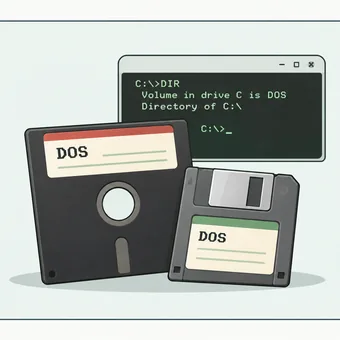
MS-DOS 1.25, 3.30 e 6.22
Três máquinas virtuais, sistemas entre 1982 e 1994, e capturas de testes reais.
Explorar →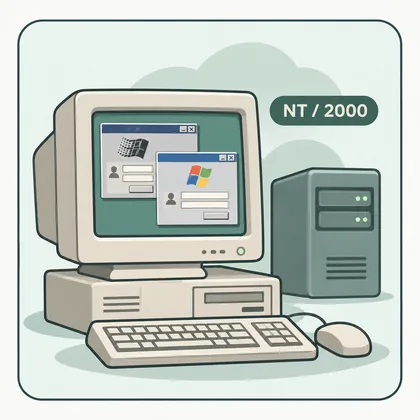
Windows NT 3.1, NT4 e 2000
NT 3.1 Advanced Server instalado (rede por resolver); NT 4.0 e Windows 2000 com testes funcionais; Windows Server 2008 R2 instalado para experiências futuras.
Explorar →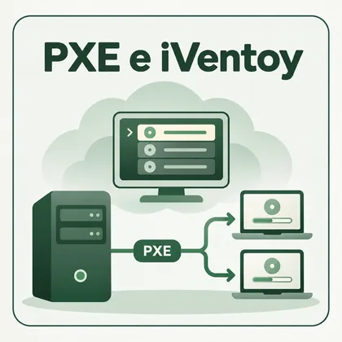
PXE e iVentoy
Arranque pela rede com biblioteca de imagens ISO; inclui resultados observados e limitações encontradas nos testes.
Explorar →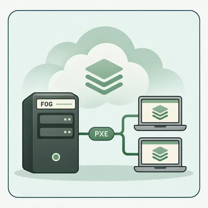
FOG Project
Captura e reposição de imagens de computadores por rede. Artigo teórico: instalação no Home Lab ainda não realizada.
Explorar →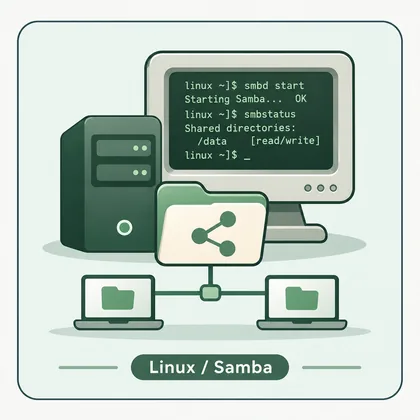
Linux — Red Hat 7.1 + Samba
Servidor Linux de 2001 com Samba 2.0.7: partilha de ficheiros testada numa máquina Windows NT 4.0.
Explorar →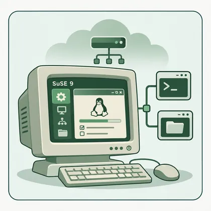
SuSE Linux 9.0
Instalação pelo YaST, rede, SSH e Samba com Windows 2000. Resultados e limitações documentados.
Explorar →Windows NT 3.1, NT4 e 2000 — experiências e testes
Nem todas as experiências precisam de começar com o sistema operativo mais recente. Uma das partes mais interessantes deste laboratório é recuperar versões que marcaram uma época e fazê-las arrancar novamente num ambiente de virtualização atual. O Windows NT 4.0 é um bom exemplo: tem uma interface familiar para quem utilizou computadores nos anos 90, mas foi criado para máquinas e periféricos muito diferentes dos atuais.
Windows NT 3.1 Advanced Server
23 disquetes depois, o Windows NT 3.1 Advanced Server ficou instalado! A VM 1301 arrancou no Proxmox com CPU 486, 64 MB de RAM e disco IDE. A instalação exigiu alguma paciência, como seria de esperar de um sistema desta geração.
A placa AMD PCnet deu mais luta: conseguimos instalar o controlador a partir de uma disquete virtual e associar a VM à vmbr70, mas o controlador não arrancou corretamente e o TCP/IP ficou indisponível. A rede fica para outro dia. O objetivo desta sessão — instalar e arrancar o NT 3.1 — foi alcançado.
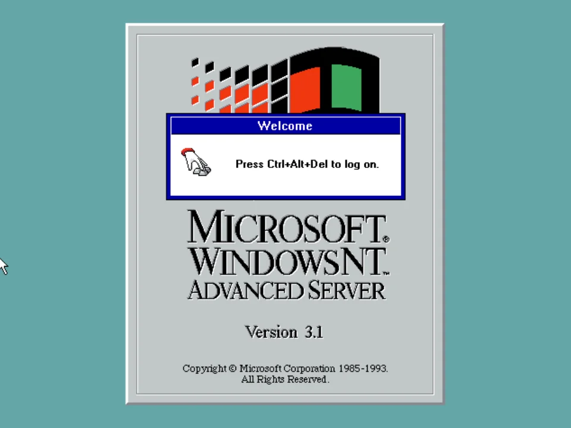
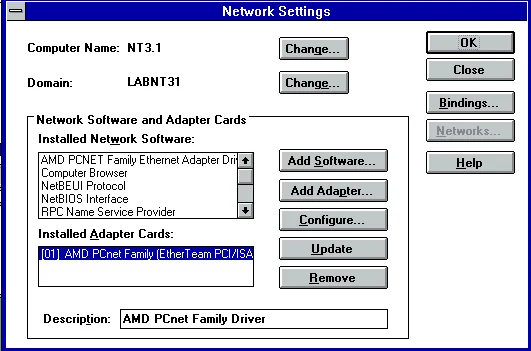
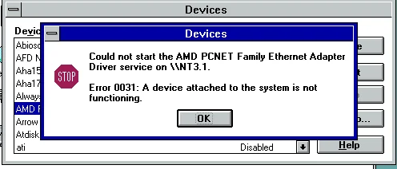
Windows NT 4.0 — instalação, rede e domínio
O conjunto das experiências com o NT 4.0 está reunido aqui: as duas instalações de servidor (NT 4.0 Server e a instalação identificada no laboratório como Advanced Timber) e o NT 4.0 Workstation. Os servidores foram instalados com sucesso e permitiram criar utilizadores para os testes do domínio LABNT40.

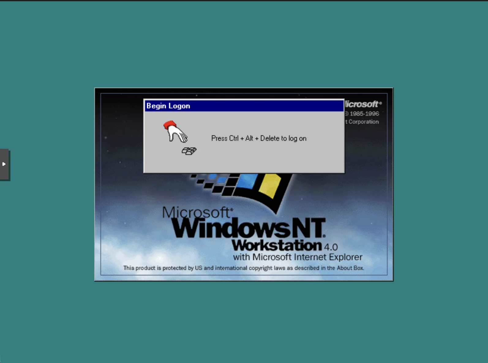
Quando o driver vinha numa disquete
Instalar o sistema operativo foi apenas parte do trabalho. Para colocar a rede a funcionar, foi necessário procurar um controlador compatível com o hardware virtual apresentado à VM. E aqui surgiu uma pequena viagem no tempo: o Windows NT não tinha os mecanismos de deteção e instalação automática de drivers a que estamos habituados hoje.
A solução passou por preparar uma imagem de disquete virtual com o driver, associá-la à máquina virtual através do Proxmox e indicar ao Windows NT onde procurar o controlador. Era uma forma de simular, com ferramentas atuais, o processo que se fazia com disquetes físicas. Assim, o sistema antigo pôde obter os ficheiros de instalação sem depender de uma drive real.
Uma dificuldade que se transforma em aprendizagem
- Escolher o hardware virtual: um sistema antigo pode reconhecer apenas certos modelos de placas e controladores.
- Encontrar o driver adequado: a compatibilidade depende do sistema operativo e do dispositivo emulado.
- Criar o suporte de instalação: neste caso, uma imagem de disquete carregada no Proxmox.
- Testar e guardar o resultado: depois de funcionar, um snapshot permite conservar esse ponto de partida.
Domínio LABNT40: utilizadores e autenticação
A instalação dos servidores NT 4.0 decorreu com sucesso, embora a configuração de rede também tenha exigido tempo. A adaptação do hardware virtual e a instalação do controlador Realtek RTL8139 através de disquete fizeram parte da experiência. Depois disso, o laboratório permitiu avançar para os testes de domínio e gestão de utilizadores.
O laboratório inclui um controlador principal de domínio (PDC), um controlador de reserva (BDC) e um cliente Windows NT 4.0 Workstation. No domínio LABNT40 foram criadas contas como Aluno_1, Aluno_2 e professor. O Windows NT 4.0 Workstation utilizou com sucesso as contas criadas nos servidores, confirmando a autenticação dos utilizadores no laboratório.

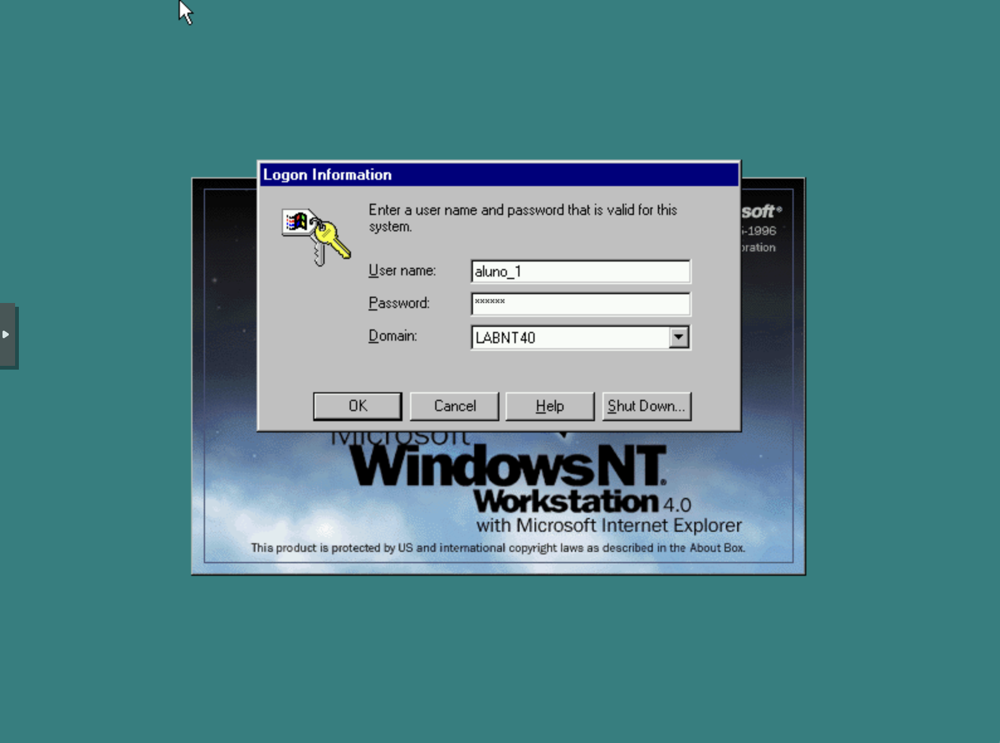
aluno_1 e domínio LABNT40 selecionados. O início de sessão no domínio foi validado nos testes, embora esta captura isolada mostre apenas o ecrã de autenticação.Controlador principal do domínio NT, onde se fazem as alterações à base de dados das contas.
Mantém uma cópia da base de dados e pode autenticar utilizadores se o controlador principal ficar indisponível, desde que tenha recebido as alterações necessárias.
No ensaio do laboratório foi também testado o funcionamento com um dos controladores desligado, para observar a continuidade da autenticação. O modelo PDC/BDC do NT 4.0 permite essa redundância; um BDC não se torna automaticamente um PDC gravável.
aluno_1 no domínio LABNT40. O acesso do Workstation com as contas dos servidores foi confirmado no laboratório; as duas capturas, isoladamente, não documentam a sequência completa do ensaio de redundância.Windows 2000 Server e Windows Server 2008 R2
No Windows 2000 Server, a instalação e os testes de autenticação decorreram como previsto. A experiência serviu para continuar a explorar o funcionamento de sistemas de servidor anteriores às versões atuais, sem misturar estas VMs com a rede principal da casa.
O Windows 2000 Server foi instalado e teve o início de sessão testado com sucesso no laboratório. O Windows Server 2008 R2 Standard encontra-se apenas instalado, tendo arrancado até ao ecrã de início de sessão. Ainda não foram criados utilizadores, configurados serviços ou realizados os testes previstos nesse sistema.


No Windows 2000 Server, foram realizados testes de autenticação com sucesso. O Windows 2000 introduziu o Active Directory, cujo modelo de replicação difere do sistema PDC/BDC do Windows NT 4.0.
Esta experiência mostra a verdadeira vantagem de um laboratório virtual: podemos experimentar, errar, voltar atrás e repetir o procedimento sem ocupar um computador antigo nem colocar o sistema principal em risco. A virtualização facilita muito o trabalho, mas não faz desaparecer todas as limitações dos sistemas históricos — e é precisamente aí que se aprende mais.
Linux — várias distribuições e Samba
Experiência realizada em 11 de novembro de 2026: instalação de um servidor Red Hat Linux 7.1 (Seawolf) em Proxmox e acesso a uma pasta partilhada a partir de uma máquina Windows NT 4.0. A pasta «Teste» foi criada no Windows NT, dentro da partilha servida pelo Linux, confirmando escrita remota. As imagens abaixo são capturas reais dos testes.
Ambiente efetivamente utilizado
Servidor: VM 421 · RedHat-7.1-Samba · kernel 2.4.2-2 · Samba 2.0.7 · placa virtual RTL8139 · vmbr70 · IP 10.10.70.21/24 · sem gateway. (Endereços substituídos por valores de demonstração para publicação.) Cliente: Windows NT 4.0 na mesma bridge isolada. Partilha: ALUNOS no diretório Linux /srv/alunos.
Os testes foram feitos numa rede virtual histórica isolada. Não foram realizados testes de controlador de domínio Samba, de acesso através da internet ou de permissões para múltiplos utilizadores.
1. Instalação e primeiro arranque
A VM foi instalada a partir dos CDs do Red Hat 7.1. No Anaconda, foi utilizada a instalação personalizada, incluindo o grupo Servidor SMB (Samba) e ferramentas de desenvolvimento e utilitários. Durante a instalação foi necessário trocar a ISO do CD 1 para o CD 2 no leitor virtual do Proxmox. O sistema arrancou depois do disco virtual, apresentando o kernel 2.4.2-2.
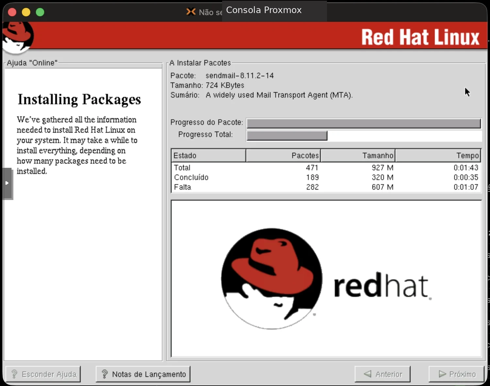
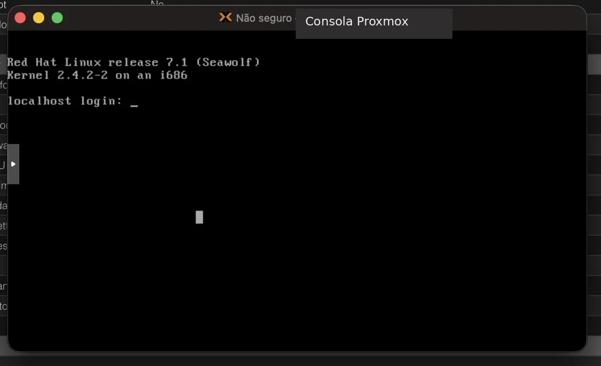
2. Um problema típico da época: XFree86
O comando startx falhou com a mensagem VGA(0): Given depth (16) is not supported by this driver e no screens found. Foi inspecionado o ficheiro /etc/X11/XF86Config-4, onde estavam definidos o controlador vga, profundidade de cor de 16 bits e resolução de 1024×768. O disco da VM foi acedido a partir do Proxmox (com a VM desligada) para permitir a edição da configuração. Não está confirmado nestes registos que o ambiente gráfico tenha ficado funcional. O servidor e a partilha funcionam em modo texto.
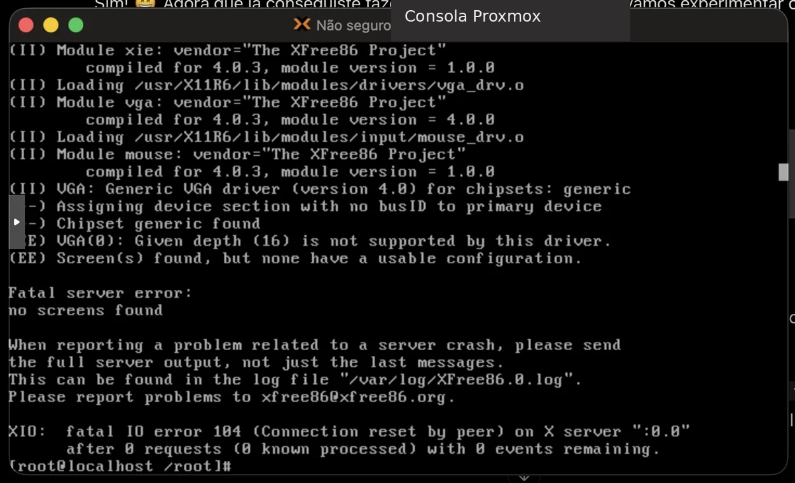
3. Rede e Samba — diagnóstico e solução
A interface eth0 foi configurada com endereço fixo 10.10.70.21 na bridge vmbr70. O Samba reconhecia a configuração da partilha ALUNOS, mas smbd e nmbd terminavam pouco depois de iniciar. Nos registos aparecia Get_Hostbyname: Unknown host redhat71. Foi adicionada a entrada 10.10.70.21 redhat71 ao ficheiro /etc/hosts; após reiniciar o serviço, ambos os processos permaneceram em execução.
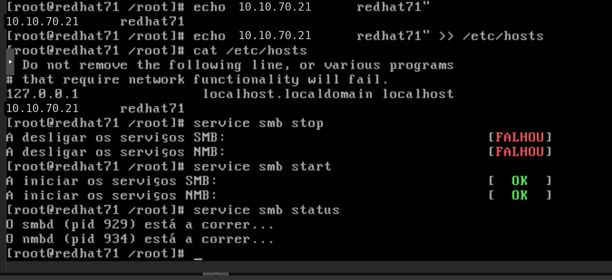
smbd / nmbd.Comandos-chave realmente utilizados
echo "10.10.70.21 redhat71" >> /etc/hosts
service smb start
chkconfig smb on
service smb status
ifconfig eth0Dica de diagnóstico: testparm -s valida a configuração do Samba; os registos em /var/log/samba/ ajudaram a identificar o erro de resolução do nome. A mensagem [ OK ] do arranque não bastava: foi necessário verificar o estado real dos processos.
4. Windows NT 4.0 a aceder à partilha Linux
No Windows NT foi aberto o caminho \\10.10.70.21\ALUNOS. O sistema solicitou credenciais para o servidor Samba. Após autenticação, a partilha foi aberta e a pasta «Teste» foi criada a partir do próprio Windows NT. A experiência demonstra comunicação entre sistemas, autenticação e escrita numa partilha SMB alojada em Linux.
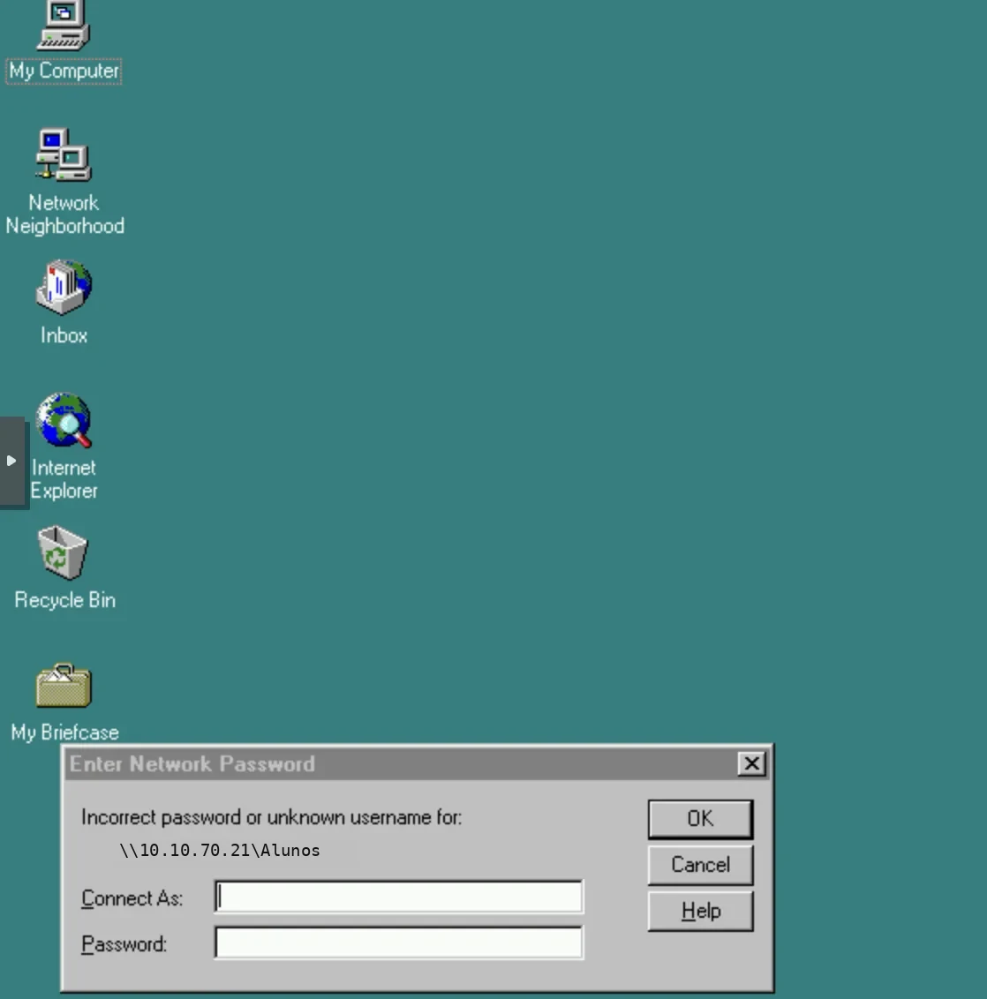
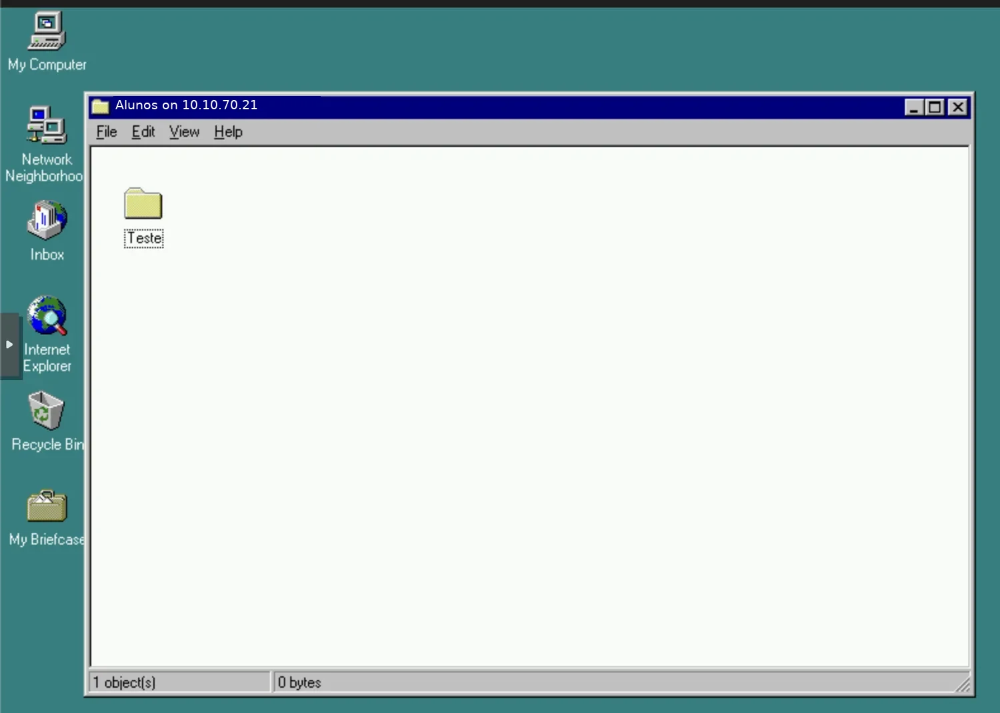
Limites dos resultados: acesso, autenticação e criação da pasta foram confirmados. Não há ainda registo de testes completos de permissões por utilizador, leitura/escrita cruzada com Windows 2000, domínio Samba PDC, nem criação efetiva da disquete de arranque.
Próxima experiência — ainda não realizada
Caldera OpenLinux Server 3.1, ISO obtida e VM 422 prevista na vmbr71, com IP proposto 10.10.71.22, para futuros testes com Windows 2000. Não existe instalação nem partilha Caldera comprovada neste registo.
SuSE Linux 9.0 — instalação e primeiros testes
A instalação do SuSE 9.0 na VM 422 ficou concluída. Foi confirmado o acesso SSH pela rede de laboratório, Samba 2.2.8a em execução e a partilha pessoal do professor acessível a partir do Windows 2000. A partilha COMUM continuava por resolver; a validação de permissões de escrita fica pendente.
Ver as capturas e o registo da instalação do SuSE Linux 9.0 →
PXE e iVentoy — arranque pela rede
O PXE (Preboot Execution Environment) permite que um computador inicie através da rede, sem precisar de arrancar primeiro a partir de um disco interno ou de uma pen USB. É especialmente útil para instalar sistemas operativos, realizar diagnósticos ou recuperar máquinas.
Mecanismo que permite iniciar um computador pela ligação de rede.
Software que disponibiliza um menu para arrancar, através da rede, sistemas e ferramentas a partir de imagens ISO compatíveis.
Ficheiro que representa uma imagem de disco, frequentemente usado para distribuir instaladores e ferramentas de recuperação.
Dois modos de firmware/arranque que podem exigir configurações diferentes no servidor e no computador cliente.
O servidor no laboratório
A interface do iVentoy Free está acessível no servidor Debian 13 da VM 300, na VLAN 40. A captura mostra uma biblioteca com 31 imagens ISO, organizada em pastas como Linux, Windows e Ferramentas.
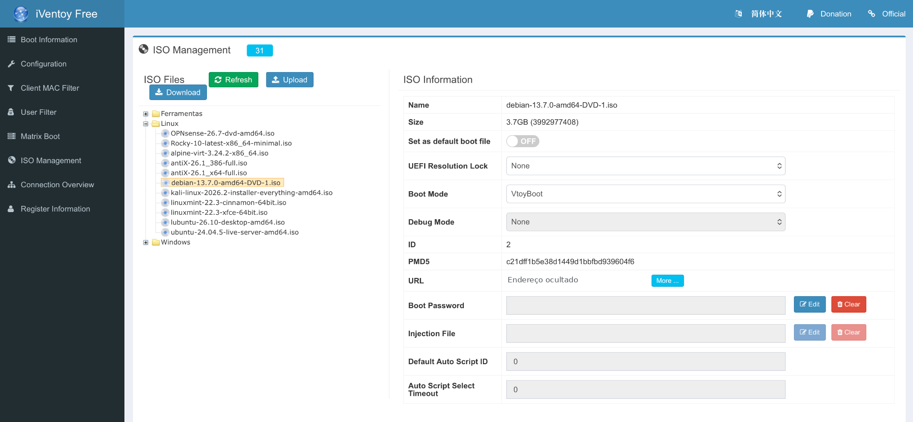
Para que serve na prática?
Escolher uma imagem compatível e iniciar a instalação num computador com suporte de arranque pela rede.
Aceder a ferramentas de manutenção sem preparar uma pen USB para cada utilitário.
Explorar as possibilidades e limitações de compatibilidade de sistemas históricos com métodos de arranque modernos.
Manter as imagens organizadas num único servidor, simplificando o acesso e a gestão.
Nem todas as imagens arrancaram como esperado
Durante as experiências de arranque pela rede com o iVentoy, algumas imagens de distribuições Linux que se pretendia utilizar em máquinas virtuais não arrancaram corretamente. Entre os exemplos observados estiveram o Linux Mint e o Kali Linux.
Foi tentado o arranque pela rede para utilização numa VM, mas o processo não decorreu como esperado.
Também apresentou problemas no arranque pela rede nas experiências realizadas para uma VM.
Esta experiência é útil para distinguir a disponibilidade de uma ISO no menu da compatibilidade efetiva de arranque. O resultado pode variar com a imagem, versão do sistema, firmware BIOS/UEFI, opções de arranque e configuração da rede. São hipóteses gerais de diagnóstico, não causas comprovadas destes testes.
O facto de estas imagens terem apresentado dificuldades no arranque pela rede não significa que as distribuições sejam incompatíveis com máquinas virtuais: a instalação direta por ISO e o arranque por PXE são processos diferentes.
Porque é tão útil numa empresa com muitos computadores?
Numa empresa com dezenas ou centenas de postos de trabalho, preparar cada computador com um CD, DVD ou pen USB torna-se repetitivo: é preciso transportar os suportes, atualizar as imagens e repetir o processo em cada equipamento.
Com um servidor PXE, a equipa de informática pode ligar os computadores à rede, escolher o arranque pela rede e selecionar uma imagem disponibilizada centralmente. A mesma biblioteca de sistemas operativos e ferramentas passa a estar acessível a diferentes máquinas, sem preparar um suporte físico para cada intervenção.
Deixa de ser necessário transportar e atualizar várias pens USB ou discos de instalação.
Os técnicos podem arrancar a mesma versão de instalador ou ferramenta em equipamentos compatíveis.
Facilita reinstalações, diagnósticos e recuperação de computadores em vários departamentos.
Quando a biblioteca de imagens muda, a gestão faz-se no servidor em vez de alterar individualmente cada suporte físico.
E quando é preciso replicar uma instalação já preparada?
Para criar várias máquinas com uma instalação-base semelhante — em vez de executar o instalador em cada uma — pode usar-se uma solução de captura e distribuição de imagens de disco, como o FOG Project. O FOG usa PXE/iPXE para arrancar os computadores e permite capturar uma imagem de referência e distribuí-la, incluindo por multicast.
Não confundir: o iVentoy disponibiliza o arranque de instaladores e ferramentas por ISO; o FOG centra-se na captura, reposição e gestão de imagens de máquinas. São abordagens complementares, não equivalentes.
Importante: arrancar uma ISO através de PXE não significa que a instalação fique automaticamente concluída. Para instalar muitos computadores de forma desatendida, podem ser necessários ficheiros de resposta, ferramentas de deployment, automatização, controladores e uma infraestrutura de rede preparada. A compatibilidade varia conforme os equipamentos e imagens.
Este projeto complementa o laboratório Proxmox e os testes com Windows NT e outros sistemas históricos.